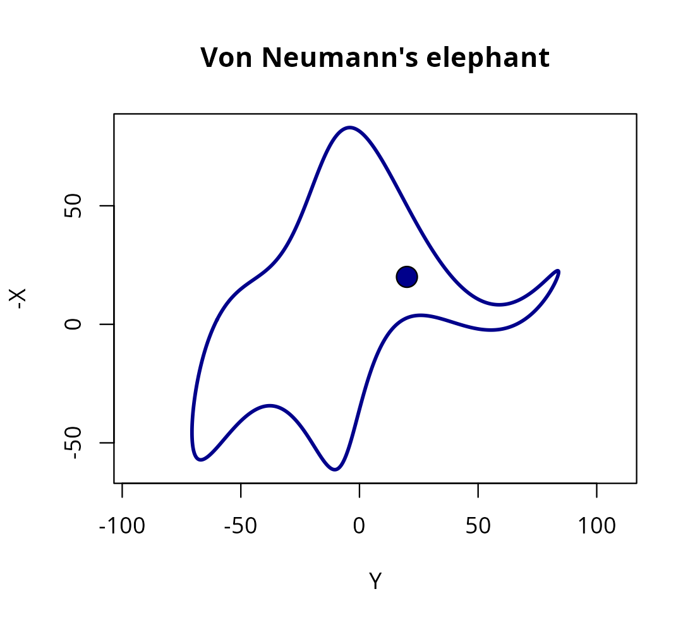

Why janos? A note on John von Neumann
Pablo Almaraz, RElab
2026-05-04
Source:vignettes/neumann_janos.Rmd
neumann_janos.RmdThe name
janos is the Hungarian form of John. The package is named in homage to Janos Lajos Neumann (1903-1957), better known in the English-speaking world as John von Neumann, whose footprints are visible in essentially every computational technique offered by this package. The choice of the Hungarian given name is deliberate: it foregrounds the mathematician the way his Budapest contemporaries knew him, before the American anglicisation that later rebranded him as Johnny.

John von Neumann, Los Alamos ID badge photograph (c. 1943). Public domain; a work of the U.S. federal government.
A brief biographical sketch
Born in Budapest on 28 December 1903 into an affluent Jewish banking family, Neumann displayed arithmetical prodigy from early childhood, reportedly dividing eight-digit numbers in his head at age six and reading Emile Borel’s Lecons sur la theorie des fonctions at eleven. He earned a chemical engineering diploma at the ETH Zurich and, simultaneously, a doctorate in mathematics at the University of Budapest in 1926, with a dissertation on an axiomatisation of set theory that resolved several of the foundational difficulties raised by Russell and Zermelo.
Through the late 1920s in Gottingen and Berlin he produced the operator-algebraic foundations of quantum mechanics, formalising observables as self-adjoint operators on Hilbert space and proving the spectral theorem in the generality still used today. His 1932 monograph Mathematische Grundlagen der Quantenmechanik remains the canonical axiomatic account of the theory. After emigrating to Princeton in 1930 and joining the Institute for Advanced Study in 1933, Neumann extended his range with an astonishing fluidity across pure and applied mathematics: ergodic theory (the mean ergodic theorem, 1932), lattice theory and continuous geometry, almost-periodic functions on groups, game theory (the minimax theorem in 1928 and the monograph Theory of Games and Economic Behavior with Morgenstern in 1944), linear programming and the duality theorem, and the mathematical theory of shock waves.
During the Second World War his applied profile grew decisively. He joined the Manhattan Project in 1943 and contributed both the implosion lens design and, with Stanislaw Ulam, the detonation-wave numerical work that required industrial-scale computation. That computational demand drove the next chapter.
Computing, Monte Carlo, and cellular automata
Neumann was central to the birth of modern computing in at least four independent ways.
First, the stored-program architecture. His 1945 First Draft of a Report on the EDVAC articulated, for the first time and with surgical clarity, the design in which instructions and data share the same memory. What is universally called the von Neumann architecture is that document; every modern general-purpose processor still follows its essentials.
Second, the Monte Carlo method. Working with Ulam at
Los Alamos in 1946-1947 on neutron diffusion through fissile materials,
he reformulated the intractable deterministic transport integrals as
expectations over stochastic particle histories that could be estimated
by sampling. The method was christened Monte Carlo by Metropolis; the
seminal exposition is Metropolis and Ulam (1949) and the mathematical
analysis of pseudorandom generation (the middle-square method,
inverse-CDF sampling, rejection sampling) is von Neumann’s. Every
stochastic backend in janos (solver_ssa_direct(),
solver_tau_leap(), solver_euler_maruyama(),
solver_rdme(), ensemble_sim(),
estimate_extinction(), mlmc_estimate()) is a
descendant of that 1947 idea.
Third, cellular automata and self-reproducing
machines. His posthumous Theory of Self-Reproducing
Automata (1966) constructed the first universal constructor, a
cellular automaton capable of building arbitrary machines, including
copies of itself, thereby anticipating by decades the formal theory of
artificial life and the self-assembly perspective on biological systems.
Reaction-diffusion master equations simulated by
solver_rdme() on lattice_graph() sit squarely
in that lineage.
Fourth, numerical weather prediction. The ENIAC run of April 1950 under Charney, Fjortoft and von Neumann was the first successful numerical integration of the barotropic vorticity equation on a computer and is widely regarded as the founding event of computational geophysics.
Beyond these, he gave the first practical treatment of the error analysis of Gaussian elimination (with Goldstine, 1947), introduced operator algebras now called von Neumann algebras, supplied a direct integration scheme for shock waves (von Neumann-Richtmyer 1950) that remains in hydrocodes, and sketched, in a 1955 lecture, the technological singularity decades before the term existed.
He died of cancer in Washington on 8 February 1957 at fifty-three, still consulting for the Atomic Energy Commission from a wheelchair. Eugene Wigner wrote that only von Neumann was fully awake among physicists of his generation; Hans Bethe observed that his brain indicated a new species, an evolution beyond man. The hyperbole is unusual among scientists of that calibre and is, for once, probably accurate.
Why this package invokes him
janos is, ultimately, a Monte Carlo instrument decorated with modern machinery. The core act it performs, compile a formula to C++, sample, aggregate, is the act von Neumann formalised in 1947. The architectural layer on which that C++ runs was his 1945 proposal. The ergodic sampling theorems that justify averaging a single long trajectory are his 1932 theorem. The cellular automaton semantics of the graph RDME descend from his 1966 automata theory. Naming the package janos is an acknowledgement that the ideas are borrowed and that the debt is enormous.
“With four parameters I can fit an elephant”
Freeman Dyson (2004) recounts, in his obituary for Enrico Fermi, an exchange that has become an aphorism of model parsimony:
I remember my friend Johnny von Neumann used to say, with four parameters I can fit an elephant, and with five I can make him wiggle his trunk.
The remark was delivered as a warning, not a boast. When a model has enough free parameters, it no longer reveals the world; it only redraws it. Fermi used the anecdote to dismiss a four-parameter fit to his pion-nucleon scattering data as scientifically empty. Von Neumann would have pointed to exactly the same hazard in any over-parametrised ODE system you care to simulate today.
For decades the statement was treated as rhetorical. Then in 2010 Jurgen Mayer, Khaled Khairy and Jonathon Howard published a short note in the American Journal of Physics giving a concrete realisation: four complex Fourier coefficients, eight real numbers, that parametrise a closed planar curve passing through the body contour of an elephant, with a fifth coefficient that makes the trunk oscillate. They called their curve Drawing an elephant with four complex parameters and treated the construction as a pedagogical one-liner on the dangers of flexible models.
janos carries a small tribute to both of those stories. The exported
function VonNeumanns_elephant() reproduces the
Mayer-Khairy-Howard construction and animates the trunk wiggle:
library(janos)
VonNeumanns_elephant(elephant_color = "darkblue", line_width = 2.5)
The function accepts trunk_wiggle and
wiggle_phase for static poses, and
animate = TRUE for a GIF output; see
?VonNeumanns_elephant for the full signature. The Easter
egg is deliberate. Whenever a user of janos fits a twelve-parameter
reaction network to five data points and declares success, the elephant
is there to remind them whose warning they are about to ignore.
Further reading
A short, consolidated bibliography for the whole package lives in
vignette("references"); below is a minimal reading list for
the historical material referenced here.
- Macrae, N. (1992). John von Neumann: The Scientific Genius Who Pioneered the Modern Computer, Game Theory, Nuclear Deterrence, and Much More. Pantheon.
- Aspray, W. (1990). John von Neumann and the Origins of Modern Computing. MIT Press.
- Metropolis, N. and Ulam, S. (1949). The Monte Carlo method. Journal of the American Statistical Association, 44(247), 335-341. doi:10.1080/01621459.1949.10483310
- Dyson, F. (2004). A meeting with Enrico Fermi. Nature, 427, 297. doi:10.1038/427297a
- Mayer, J., Khairy, K. and Howard, J. (2010). Drawing an elephant with four complex parameters. American Journal of Physics, 78(6), 648-649. doi:10.1119/1.3254017